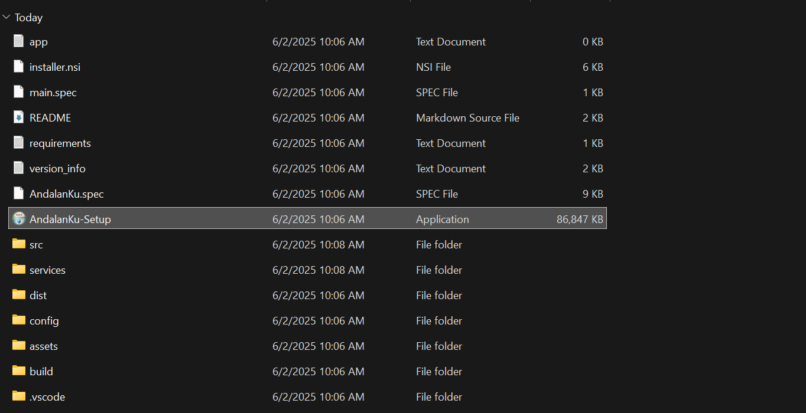
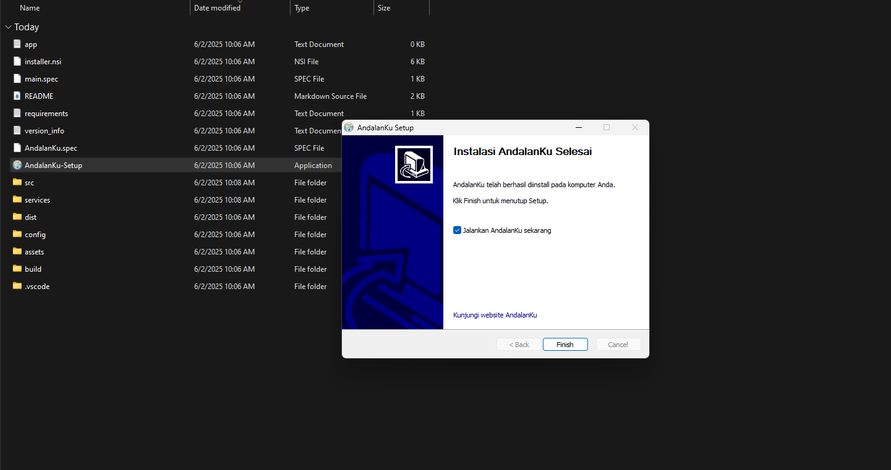
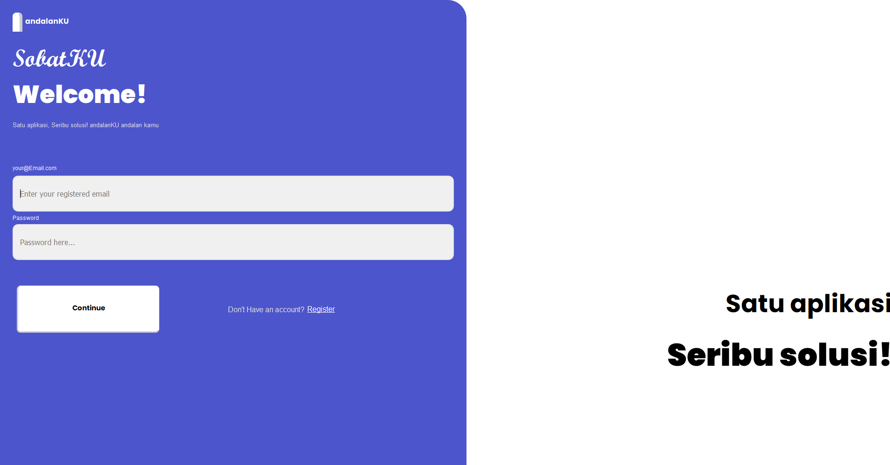

Getting Started with andalanKU
Learn how to install and configure andalanKU for your business needs
Introduction
andalanKU is a powerful database management system designed to help businesses manage their operations efficiently. This guide will help you get started with the basic setup and configuration.
Installation
Follow these steps to install andalanKU on your system:
1. Download andalanKU
Download the latest version from the main page
2. Extract andalanKU folder
Extract and open the andalanKU folder

3. Follow Installation Guide
Open the setup application and follow the next steps

4. Launch Application
Launch andalanKU application from desktop or start menu

5. Sign in or Register to andalanKU
Sign in or register to andalanKU using your account